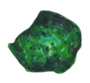
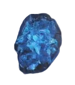
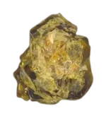
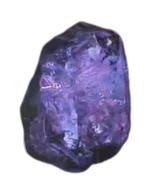

| Name |
Color |
Powers and capabilities |
Image |
| Soul |
Orange |
According to Wong's ancient texts, the Soul Stone could prove to be the greatest threat out of all the Infinity Stones. |
 |
| Time |
Green |
The Eye of Agamotto is an ancient artifact, a pendant created by Agamotto, the first Sorcerer Supreme, presumably to contain and harness the power of the green Time Stone contained inside. After being stored for an unknown amount of time on a pedestal in Kamar-Taj, it was recently wielded by Doctor Stephen Strange, first to aid him in his learning of sorcery, then in his final fight against Kaecilius and Dormammu. |
 |
| Space |
Blue |
The Tesseract is named for its cube-like appearance and is capable of controlling space itself, providing the user instant access to any location throughout the universe if used correctly. The unique element that composes the Tesseract has also been used to create advanced weaponry by races like the Humans. |
 |
| Mind |
Yellow |
The Scepter was a weapon that utilized the yellow Mind Stone housed inside a blue computer module, which also masked the stone's presence. Stark originally saw the Stone as a power source, whereas once J.A.R.V.I.S. |
 |
| Reality |
Red |
The Aether appears as a dark, red, viscous liquid. It acts as a symbiotic force, capable of being absorbed into the body of a living host, giving the user the ability to warp reality at will, granting that person immense strength, durability, powers, and subjective influence over the universe. |
 |
| Power |
Purple |
The Power Stone is an incredible power source, it increases the user's physical abilities and allows it to manipulate energy, which, when used at full potential, has enough power to obliterate an entire planet when unleashed. |
 |